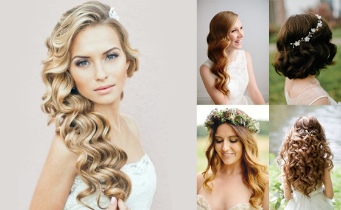

El peinado y estilismo es un servicio clave en los salones de belleza, ya que transforma la apariencia del cabello para ocasiones especiales o simplemente para el día a día. Existen diferentes técnicas y estilos según la ocasión, el tipo de cabello y la tendencia del momento.
💼 Para el trabajo o reuniones: Peinados sencillos como ondas suaves, moños bajos o coletas elegantes.
🏫 Para la escuela o universidad: Trenzas, colas de caballo y recogidos fáciles de hacer.
👰 Para novias: Recogidos elegantes, ondas definidas y peinados con accesorios.
🎉 Para fiestas y eventos: Peinados voluminosos, moños altos o estilos con brillo y adornos.
🏖️ Para el día a día: Estilos despeinados, ondas naturales o cabello suelto con volumen.
🛠️ Herramientas esenciales:
✔ Secador de cabello – Para moldear y dar volumen.
✔ Plancha de pelo – Para alisar o crear ondas marcadas.
✔ Tenaza o rizador – Ideal para definir rizos u ondas.
✔ Cepillos térmicos – Para dar forma mientras se seca el cabello.
✔ Peines de precisión – Para seccionar el cabello correctamente.
✔ Ligas y ganchos invisibles – Para fijar peinados de manera discreta.
💡 Productos clave para fijación y textura:
✔ Mousse o espuma – Para dar volumen y fijación sin apelmazar.
✔ Laca o spray fijador – Para mantener el peinado intacto por más tiempo.
✔ Cera o pomada – Para definir mechones y evitar frizz.
✔ Aceites capilares – Para dar brillo y suavidad sin engrasar.
🔹 Rostro redondo: Peinados altos para alargar la cara, como coletas altas o moños.
🔹 Rostro ovalado: Casi cualquier peinado le favorece, desde lisos hasta recogidos.
🔹 Rostro cuadrado: Ondas suaves y peinados despeinados para suavizar los rasgos.
🔹 Rostro alargado: Peinados con volumen a los lados para equilibrar las proporciones.
🔹 Rostro en forma de corazón: Recogidos bajos y ondas sueltas para armonizar la forma.
🌟 Coletas con efecto lifting – Peinados altos que estilizan el rostro.
🌟 Peinados con lazo o cintas – Un toque vintage y femenino.
🌟 Efecto despeinado (Messy Look) – Trenzas y recogidos con mechones sueltos.
🌟 Baby Braids – Pequeñas trenzas delgadas en los mechones delanteros.
🌟 Moños con volumen – Moños grandes con textura, ideales para eventos.
🌟 Peinados con accesorios llamativos – Horquillas brillantes, diademas y perlas.